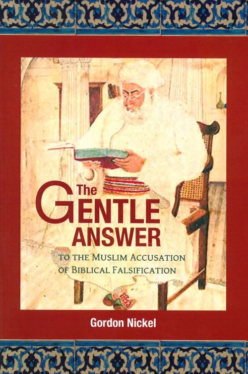

Apr 22
2026
2026
Reading Muqātil after Forty Years
Notes from the long work of translating the earliest complete commentary on the Qur'an — and what it reveals about how the first Muslim readers understood their book.
Read on Substack →The work of Dr. Gordon Nickel — writings on the Qur'an and the Bible, the long story of Christian–Muslim conversation in South Asia, and an invitation to read and reason together.

A simple, unhurried explanation of each chapter — freely streaming online.
Enter the Library →New, peer-reviewed research on the long history of Christian–Muslim interaction in South Asia — released as freely available, beautifully typeset PDFs.
Read the Papers →Bengali, Arabic, Mandarin Chinese, Telugu, Tamil, Urdu — each offered with a free chapter or two, with the full work available for a nominal fee.
See Translations →“ Dear reader, this book is an invitation to read and reason together — to invite friendly conversation between Muslims and non-Muslims, in a spirit that takes the questions of truth seriously.— from the opening of The Gentle Answer
Scholar of the Qur'an and its classical commentaries; historian of Christian–Muslim relations in South Asia.
Now happily retired, Dr. Nickel lives with his wife Gwenyth in the midst of forests and clearwater lakes just west of the Monashee Mountains in British Columbia, where he continues to write in the areas of the Qur'an and its classical commentaries, and the long history of Christian–Muslim relations in South Asia.
His Christian commentary on the Qur'an was released in April 2020 by Zondervan/HarperCollins. He is presently working with Baylor University Press to publish an English translation of the first part of the earliest complete Muslim commentary on the Qur'an, by Muqātil ibn Sulaymān.
The work that became The Gentle Answer was begun at the request of Christian friends in India, who asked whether there were considered, scholarly answers to the accusations of Izhar al-Haqq. The book aims to remove obstacles that prevent Muslims and non-Muslims from reading and reasoning together — a slow, patient invitation rather than a polemic.
A growing archive of free resources to accompany Dr. Nickel's writing — short videos, chapter summaries, and historical research on the long story of Christian–Muslim interaction.
The long story of Christian–Muslim interaction in South Asia that preceded — and then answered — Rahmatallah Kairanwi's polemic. Newly typeset, freely downloadable.
An archival reconstruction of the public exchanges that lay behind the Izhar — the questions raised, the sources used, and what each side believed it had won.
The career and rhetoric of the missionary whose Persian and Urdu writings provoked Kairanwi's response — and what is often misunderstood about his approach.
The biography of the scholar from Kairana whose 1864 polemic continues to shape Muslim apologetics — drawn from Urdu and Arabic sources.
How Izhar al-Haqq traveled through Urdu, Arabic, and English translations across South Asia — and the responses it elicited from Christian scholars in Lahore, Calcutta, and Madras.
A survey of the remarkable corpus of Jesus-traditions preserved in classical Islamic literature — what they preserve, and what they tell us about early reading of the Gospels.
A less-told history: Christian–Muslim conversation in Tamil-, Telugu-, and Kannada-speaking regions before and after the Izhar. Drawn from new archival research.
Shorter reference articles on the figures of the nineteenth-century Christian–Muslim conversation in North India — written for scholarly reference works and reproduced here as freely downloadable PDFs.
The Indian Muslim scholar from Panipat whose long pilgrimage of inquiry led him from the 'ulamā' of North India to a deep engagement with the Bible — and to a remarkable body of Urdu Christian writing.
The German missionary whose Persian and Urdu writings — above all the Mīzān al-Ḥaqq — set the terms of public Christian–Muslim debate in mid-nineteenth-century North India.
The thoughtful deputy inspector of schools whose long correspondence — and eventual public confession — formed one of the more searching personal answers offered in the wake of the Agra debates.
Personal reflections on writing projects related to Islam, and discussion of the work of others in academia, news, and online — published on Substack and gathered here.
Notes from the long work of translating the earliest complete commentary on the Qur'an — and what it reveals about how the first Muslim readers understood their book.
Read on Substack →A note on the launch of the Bengali translation, the translator who took it up, and what we hope readers in Bangladesh and West Bengal will find.
Read on Substack →A 160-year-old book continues to shape Muslim apologetics. A short reflection on why a careful, patient answer remains worth the effort.
Read on Substack →The recent manuscript discoveries are remarkable — and they should be discussed without overstatement on either side.
Read on Substack →Year-end reflections on writing, walking, and the mountains.
Read on Substack →"Personal reflections on writing projects related to Islam — and the writing of others."
Subscribe on Substack →Dr. Nickel's published books, growing translations into the languages of the Muslim world, and — for those who enjoy a different kind of reading — a small shelf of detective fiction.
A 502-page scholarly response — and a friendly invitation to read and reason together.
A verse-by-verse commentary on the Qur'an from a careful Christian reader, published by Zondervan/HarperCollins.
The first English translation of the earliest complete Muslim commentary on the Qur'an.

A scholar of Islamic manuscripts is drawn into a quiet, dangerous puzzle written into the margins of an old book.
In the old city of Hyderabad, a centuries-old riddle and a very modern theft draw an unlikely investigator into the four — and a fifth — towers of the Charminar.
First two chapters available free. The complete PDF is offered for a nominal fee that supports further translation work.
The book was written for conversation. We are slowly making it available in the languages where that conversation most needs to happen — partnering with translators who know the readers and the context.
For each language: a chapter or two offered freely, with the complete translated PDF available for a nominal fee that supports the next translation.
Your gift directly supports translation work into Bengali, Arabic, Mandarin, Urdu, Tamil, and Telugu — as well as the production of free films, summary PDFs, and historical research papers.
Every translated chapter, every short film, every freely-given PDF is the work of someone whose time you can help honour.
One-time · Monthly · In honour of